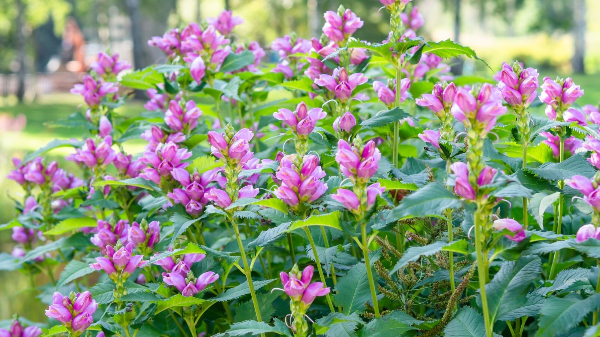
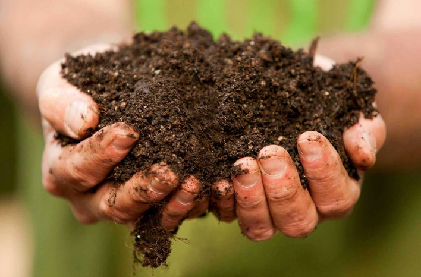
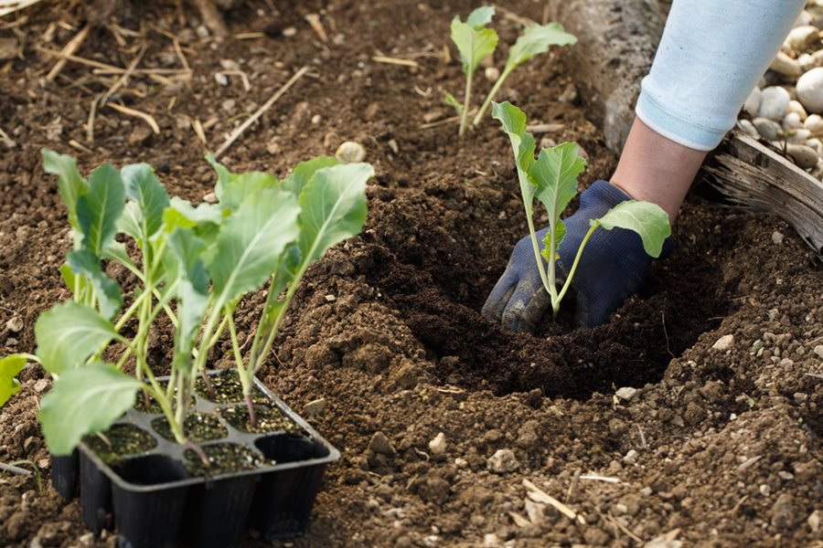
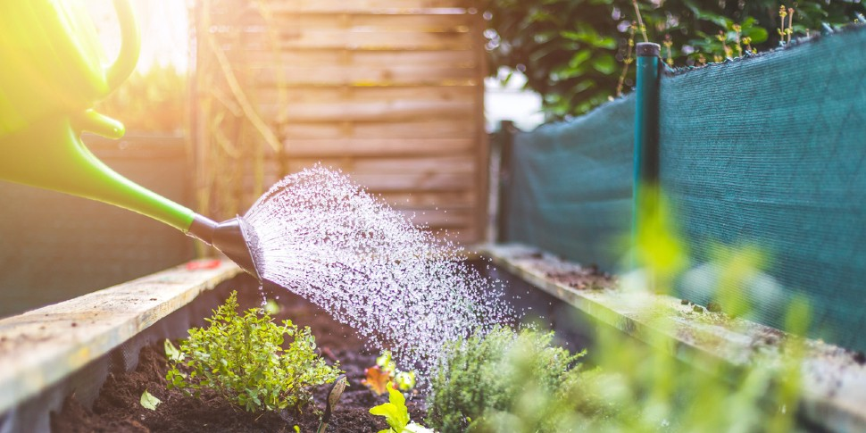
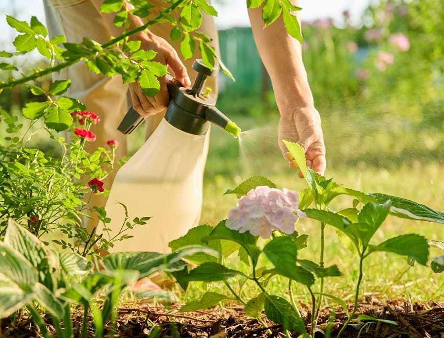

1. Escolha a Planta e o Local Adequados
Sol e Clima: Pesquise a quantidade de luz solar necessária (sol pleno 6+ horas, sombra parcial etc.). Escolha um local que corresponda a essa exigência.
Espaço: Verifique espaço aéreo (folhagem) e subterrâneo (raízes).
Drenagem: O solo não deve empoçar água — boa drenagem evita apodrecimento das raízes.

Fonte: https://drjardim.com.br/basicos/dicas-de-jardinagem/21-plantas-que-prosperam-em-solo-umido/
2. Prepare o Solo
O solo é a base da saúde da planta.
- Corrija e Enriqueça: Misture composto orgânico (húmus) ou esterco bem curtido ao solo nativo para melhorar estrutura, retenção de água e nutrientes.
- pH: Verifique o pH e ajuste conforme a necessidade da espécie.

Fonte: https://joegardener.com/podcast/016-composting-a-to-z-the-quick-and-dirty-on-everything-compost/
3. O Plantio
Época Certa: Plante na estação ideal: primavera para a maioria; outono para algumas sementes e bulbos.
Tamanho do Buraco: Faça um buraco 2x mais largo que o torrão e na mesma profundidade; posicione a planta com o colo no nível do solo.

Fonte: https://www.gardendesign.com/seeds/starting.html
4. Cuidados Constantes (Manutenção)
- Rega: Regue profundamente e com menos frequência, permitindo que a camada superior seque levemente entre as regas. Prefira regar pela manhã cedo.
- Nutrição: Use fertilizante equilibrado na época de crescimento e floração.
- Controle de Pragas e Doenças: Remova ervas daninhas e trate pragas cedo com métodos orgânicos ou apropriados.

Fonte: https://www.gardengatemagazine.com/review/best-time-of-day-to-water-plants/

Fonte: https://harvestsavvy.com/natural-pest-control/.
Resumo
Forneça solo, luz e água adequados; observe a planta com regularidade e aja com cuidado. Planejamento + observação = sucesso.